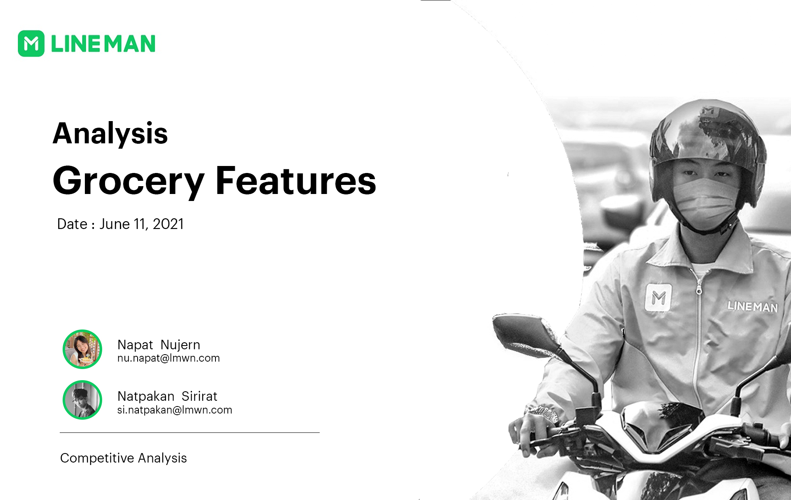
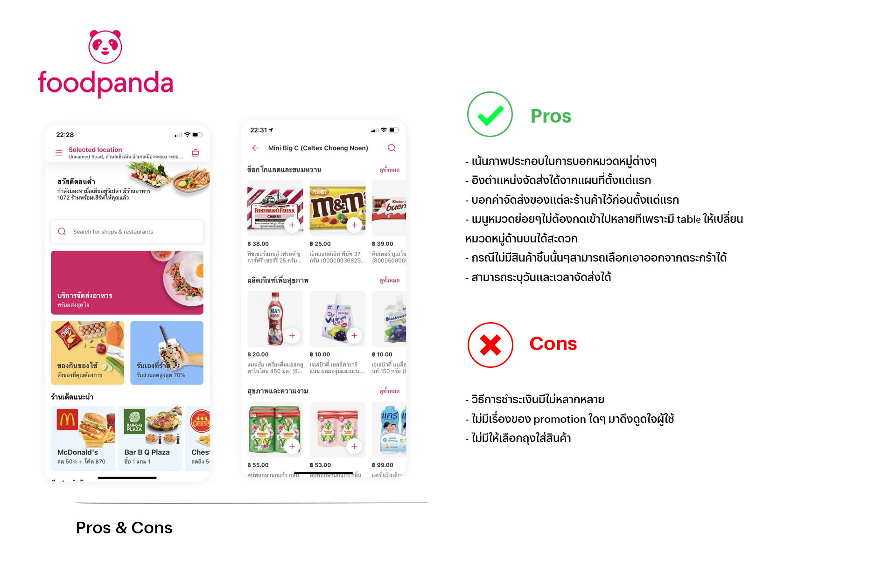
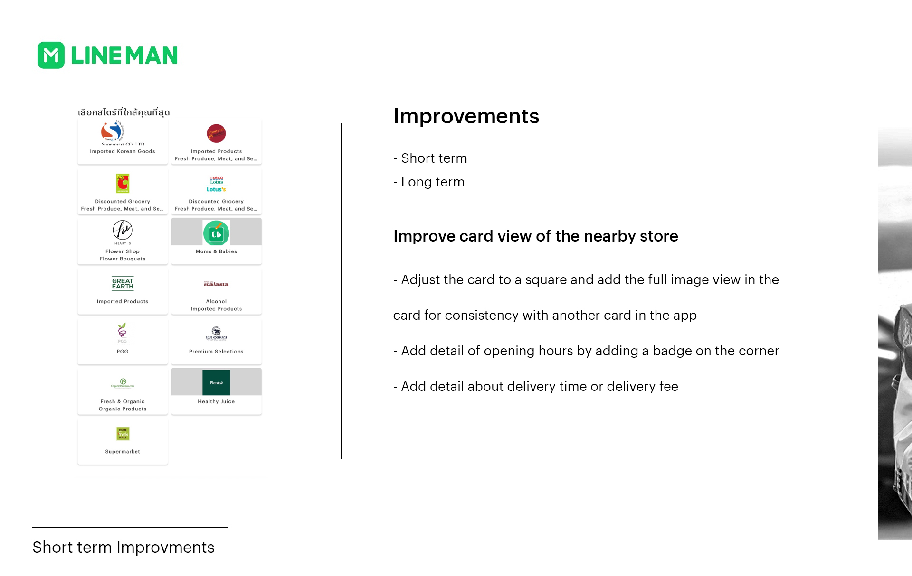
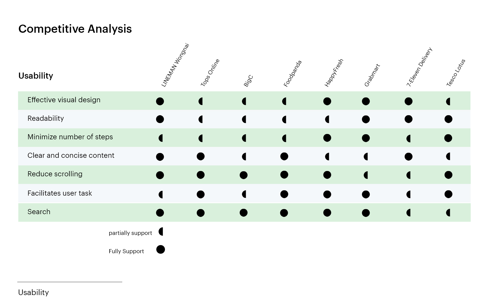

Mart feature - UX research
A project I worked on during my internship at LMWN — my first experience with UX
Overview
This was a project I worked on during my internship at LMWN (LINE MAN Wongnai), where I had the opportunity to conduct UX research — analyzing both the strengths and weaknesses of direct and indirect competitors, exploring directions for short- and long-term feature development, and finally delivering a presentation with feedback for the team to use moving forward.
I collaborated on this project with a teammate, and one of the key takeaways was significantly improving my researching skills, especially in uncovering the insights we needed. These processes are absolutely essential for effective design as well.

The main objectives are as follows:

Competitor Analysis
We had the opportunity to dive deep and gather in-depth information for the first time. We laid out all the competitors, then prioritized them to identify which ones were most interesting — so we could focus on the right targets. This is just a rough example (since some parts are company confidential).


Competitive Audit
